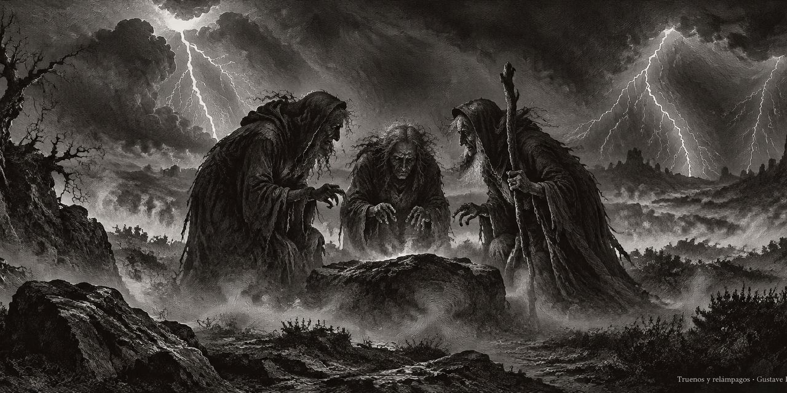

12 de octubre de 2026
Osmancito, con la asistencia de Instinct
Macbeth en español

En gris, la traducción provisional.
Acto I
Escena 1. Un lugar abierto.
Truenos y relámpagos. Entran tres brujas.
PRIMERA BRUJA
¿Cuándo nos volveremos a reunir las tres? ¿Entre truenos, relámpagos o lluvia?
SEGUNDA BRUJA
Cuando acabe el tumulto, cuando la batalla sea perdida y ganada.
TERCERA BRUJA
Será antes de la puesta del sol.
PRIMERA BRUJA
¿En qué lugar?
SEGUNDA BRUJA
En el páramo.
TERCERA BRUJA
Allí para encontrarnos con Macbeth.
PRIMERA BRUJA
¡Ya voy, Graymalkin!
SEGUNDA BRUJA
Llama el sapo.
TERCERA BRUJA
¡Ya voy!
TODAS
Lo bueno es malo, y lo malo es bueno: revolotead entre la niebla y el aire infecto.
Salen.
Escena 2. Un campamento cerca de Forres.
Alarma en el interior. Entran el rey Duncan, Malcolm, Donalbain, Lennox, con sus acompañantes, al encontrarse con un capitán ensangrentado.
DUNCAN
¿Qué hombre ensangrentado es ese? Por su estado, parece que puede informarnos de lo último ocurrido en la rebelión.
MALCOLM
Este es el sargento que, cual buen y valeroso soldado, luchó contra mi cautiverio. —¡Salve, valiente amigo! Informad al Rey sobre el estado de la contienda tal como la dejasteis.
SOLDADO
La contienda era incierta; como dos nadadores exhaustos que se aferran entre sí y ahogan su arte. El despiadado Macdonwald (digno de ser rebelde, pues sobre él pululan las múltiples villanías de la naturaleza) ha sido reforzado con kerns y gallowglasses de las Islas Occidentales; y la Fortuna, sonriendo ante su maldita causa, se mostró cual ramera de un rebelde. Pero todo es insuficiente; pues el bravo Macbeth (nombre que bien merece), despreciando a la Fortuna, con su acero blandido, que humeaba por la sangrienta ejecución, como el predilecto de la Valentía, se abrió paso hasta que se enfrentó al esclavo; quien no le estrechó la mano ni se despidió de él, hasta que lo descosió desde el ombligo hasta la mandíbula, y clavó su cabeza en nuestras almenas.
DUNCAN
¡Oh, valiente primo! ¡Digno caballero!
SOLDADO
Tal como del mismo lugar donde el sol inicia su reflejo estallan tormentas de naufragio y truenos funestos, así de esa fuente, de donde el alivio parecía brotar, crece la desventura. Notad, Rey de Escocia, notad: apenas la justicia, armada de valor, hubo obligado a estos ligeros infantes a huir, el señor de Noruega, viendo la ocasión, con armas relucientes y nuevos refuerzos, emprendió un nuevo asalto.
DUNCAN
¿No desalentó esto a nuestros capitanes, Macbeth y Banquo?
SOLDADO
Sí; como gorriones águilas, o la liebre el león. Si digo la verdad, debo decir que eran como cañones sobrecargados de doble carga; así redoblaron doblemente sus golpes sobre el enemigo: a menos que pretendieran bañarse en heridas humeantes, o recrear otro Gólgota, no sabría decirlo— mas me desvanezco, mis tajos claman auxilio.
DUNCAN
Tus palabras te sientan tan bien como tus heridas: ambas destilan honor. Id, buscadle cirujanos.
Sale el Capitán, acompañado.
Entran Ross y Angus.
DUNCAN
¿Quién viene aquí?
MALCOLM
El digno Thane de Ross.
LENNOX
¡Qué premura se lee en su mirada! Así debe lucir quien parece hablar de cosas extrañas.
ROSS
¡Dios salve al Rey!
DUNCAN
¿De dónde venís, digno talán?
ROSS
De Fife, gran Rey, donde los estandartes noruegos desafían al cielo y agitan un frío sobre nuestro pueblo. El mismísimo Noruega, con huestes temibles, auxiliado por aquel traidor de lo más desleal, el Tán de Cawdor, emprendió una funesta contienda; hasta que aquel esposo de Bellona, revestido de coraza, le hizo frente en igualdad de fuerzas, punta contra punta, brazo rebelde contra brazo, refrenando su ímpetu desmedido; y, para concluir, la victoria fue nuestra.
DUNCAN
¡Qué gran dicha!
ROSS
Que ahora Sweno, rey de Noruega, busca un acuerdo; ni le concederíamos el entierro de sus hombres hasta que desembolsara en Saint Colme’s Inch diez mil dólares para nuestro uso general.
DUNCAN
Ya no podrá ese conde de Cawdor traicionar nuestro más íntimo interés. Id y proclamad su muerte inmediata, y con su antiguo título recibid a Macbeth.
ROSS
Haré que se cumpla.
DUNCAN
Lo que él ha perdido, el noble Macbeth lo ha ganado.
Salen.
Escena 3. Un páramo.
Trueno. Entran las tres brujas.
PRIMERA BRUJA
¿Dónde has estado, hermana?
SEGUNDA BRUJA
Matando cerdos.
TERCERA BRUJA
Hermana, ¿dónde estás?
PRIMERA BRUJA
La mujer de un marinero tenía castañas en su regazo, y masticaba, y masticaba, y masticaba. «Dame —dije yo.» ¡Fuera, bruja! clama la canalla engordada de sobras. Su esposo ha partido a Alepo, capitán del Tigre: mas en un cedazo navegaré hacia allá, y, como una rata sin cola, haré, haré y haré.
SEGUNDA BRUJA
Te daré un viento.
PRIMERA BRUJA
Eres bondadosa.
TERCERA BRUJA
Y yo otro.
PRIMERA BRUJA
Yo misma poseo todos los demás, y los mismos puertos hacia donde soplan, todos los rumbos que conocen en la brújula del marino. Lo secaré como el heno: ni noche ni día el sueño descansará sobre sus párpados; vivirá como un hombre maldito. Siete noches, nueve veces nueve, de cansancio, menguará, languidecerá y se consumirá: aunque su nave no pueda naufragar, será por la tempestad azotada. Mirad lo que tengo.
SEGUNDA BRUJA
Muéstrame, muéstrame.
PRIMERA BRUJA
Aquí tengo el pulgar de un piloto, naufragado en su regreso a casa.
Suena un tambor.
TERCERA BRUJA
¡Un tambor, un tambor! Viene Macbeth.
TODAS
Las Hermanas Fatídicas, de la mano, errantes por mar y tierra, así dan vueltas, vueltas: tres veces para ti, y tres para mí, y otras tres, para completar nueve. ¡Silencio! —el hechizo está sellado.
Entran Macbeth y Banquo.
MACBETH
Tan nefasto y tan venturoso día no he visto.
BANQUO
¿Cuán lejos queda Forres? ¿Qué son estas, tan marchitas y de ropajes tan salvajes, que no parecen habitantes de la tierra y, sin embargo, en ella habitan? ¿Vivís? ¿O sois algo que el hombre pueda cuestionar? Parecéis comprenderme, al posar cada una a la vez su dedo áspero sobre sus labios delgados. Deberíais ser mujeres, mas vuestras barbas me impiden interpretar que lo sois.
MACBETH
Hablad, si podéis; ¿qué sois?
PRIMERA BRUJA
¡Salve, Macbeth! ¡Salve, Thán de Glamis!
SEGUNDA BRUJA
¡Salve, Macbeth! ¡Salve, Thane de Cawdor!
TERCERA BRUJA
¡Salve, Macbeth! ¡que serás rey en adelante!
BANQUO
Buen señor, ¿por qué os sobresaltáis y parecéis temer cosas que suenan tan hermosas? —Por la verdad, ¿sois meras fantasías, o sois realmente lo que aparentáis? A mi noble compañero saludáis con gracia presente y gran profecía de noble posesión y de real esperanza, que parece quedar absorto por ello. A mí no me habláis. Si podéis escudriñar las semillas del tiempo, y decir qué grano crecerá y cuál no, habladme entonces a mí, que ni suplico ni temo vuestros favores ni vuestro odio.
PRIMERA BRUJA
¡Salve!
SEGUNDA BRUJA
¡Salve!
TERCERA BRUJA
¡Salve!
PRIMERA BRUJA
Menor que Macbeth, y mayor.
SEGUNDA BRUJA
No tan dichoso, mas mucho más dichoso.
TERCERA BRUJA
Engendrarás reyes, aunque no seas uno: ¡así que salud, Macbeth y Banquo!
PRIMERA BRUJA
¡Salve, Banquo y Macbeth!
MACBETH
¡Deteneos, hablantes imperfectos, decidme más! Por la muerte de Sinel sé que soy Thane de Glamis; ¿pero cómo de Cawdor? El conde de Cawdor vive, un caballero próspero; y ser rey no es algo digno de crédito, tanto como ser Cawdor. Decid de dónde sacáis tan extraña noticia. ¿o por qué en este páramo maldito nos cortáis el paso con tan profético saludo? Hablad, os lo ordeno.
Desaparecen las brujas.
BANQUO
La tierra tiene burbujas, como el agua, y estas son de ellas. ¿Adónde se han desvanecido?
MACBETH
Al aire; y lo que parecía corporal, se disolvió como el aliento en el viento. ¡Ojalá se hubiesen quedado!
BANQUO
¿Estuvieron aquí tales cosas de las que hablamos? ¿O hemos probado la raíz de la locura que hace prisionera a la razón?
MACBETH
Vuestros hijos serán reyes.
BANQUO
Serás rey.
MACBETH
Y también el de Cawdor; ¿no ha sido así?
BANQUO
Con la misma melodía y las mismas palabras. ¿Quién está aquí?
Entran Ross y Angus.
ROSS
El Rey ha recibido con júbilo, Macbeth, las noticias de tu éxito, y al leer tu valiente gesta en la lucha contra los rebeldes, sus asombros y sus elogios se disputan si deben ser tuyos o suyos; silenciado por ello, al revisar el resto de ese mismo día, te halla en las firmes filas noruegas, sin temor alguno de las extrañas imágenes de muerte que tú mismo provocaste. Tan seguidos como relatos llegaban mensajero tras mensajero; y todos portaban tus alabanzas por la gran defensa del reino, y las vertían ante él.
ANGUS
Somos enviados para darte las gracias de nuestro soberano; solo para anunciarte ante su presencia, no para pagarte.
ROSS
Y, como prenda de un honor mayor, me mandó, de su parte, llamarte Thane de Cawdor: Con tal adición, ¡salve, muy digno thane!, pues es tuyo.
BANQUO
¿Qué? ¿Puede el diablo decir la verdad?
MACBETH
El conde de Cawdor vive: ¿por qué me vestís con ropajes prestados?
ANGUS
El que fuera el Thane vive aún, mas bajo un severo juicio sostiene la vida que merece perder. Si se alió con los de Noruega, o si socorrió al rebelde con ayuda oculta y ventaja, o si con ambas cosas contribuyó a la ruina de su patria, no lo sé; mas traiciones capitales, confesadas y probadas, lo han derrocado.
Aparte.
MACBETH
Glamis, y Thán de Cawdor: lo más grande está por venir.
A Ross y a Angus.
MACBETH
Gracias por vuestras molestias.
A Banquo.
MACBETH
¿No esperáis que vuestros hijos sean reyes, cuando aquellos que me dieron el Thán de Cawdor les prometieron no menos?
BANQUO
Que, hogar de confianza, podría aún encenderte hacia la corona, además del de Thane de Cawdor. Mas es extraño: y a menudo, para conducirnos a nuestro mal, los instrumentos de las tinieblas nos dicen verdades; nos ganan con nimiedades honestas para traicionarnos en lo más trascendental. — Primos, una palabra, os ruego.
Aparte.
MACBETH
Dos verdades se han cumplido, como dichosos prólogos del creciente acto de la gesta imperial. —Os agradezco, caballeros.
Aparte.
MACBETH
Este influjo sobrenatural no puede ser malo; no puede ser bueno. Si es para mal, ¿por qué me ha dado prenda de éxito, comenzando con una verdad? Soy el señor de Cawdor: Si es bueno, ¿por qué cedo a esa sugerencia cuya imagen horrorosa me eriza el cabello y hace que mi corazón, en su sitio, golpee contra mis costillas, contra la naturaleza? Los temores presentes son menores que las horribles imaginaciones. Mi pensamiento, cuyo asesinato es aún solo fantasía, sacude tanto mi integridad de hombre que la acción se sofoca en la conjetura, y nada es sino lo que no es.
BANQUO
Mirad cómo nuestro compañero está absorto.
Aparte.
MACBETH
Si el azar me quiere rey, pues el azar podrá coronarme sin mi intervención.
BANQUO
Nuevos honores le han sobrevenido; cual extrañas vestiduras, no se ciñen a su molde sino con el auxilio del uso.
Aparte.
MACBETH
Pase lo que pase, el tiempo y la hora transcurren por el día más recio.
BANQUO
Digno Macbeth, aguardamos a su conveniencia.
MACBETH
Concededme vuestro favor. Mi mente embotada se hallaba presa de cosas olvidadas. Gentiles señores, vuestros afanes quedan inscritos donde cada día paso la hoja para leerlos. —Dirijámonos hacia el Rey. — Pensad en lo que ha acontecido; y en otro momento, habiéndolo sopesado en este intervalo, hablemos con el corazón abierto el uno al otro.
BANQUO
Con gran gusto.
MACBETH
Hasta entonces, basta. —Vamos, amigos.
Salen.
Escena 4. Forres. Una sala del palacio.
Fanfarria. Entran Duncan, Malcolm, Donalbain, Lennox y servidores.
DUNCAN
¿Ha sido ejecutado Cawdor? ¿No han regresado aún los encargados?
MALCOLM
Mi señor, aún no han regresado. Mas he hablado con quien lo vio morir, quien relató que con gran franqueza confesó sus traiciones, imploró el perdón de vuestra Alteza y manifestó un profundo arrepentimiento. Nada en su vida le sentó tan bien como dejarla; murió como quien hubiera ensayado su muerte, para desprenderse de lo más preciado que poseía como si fuera una insignificante nimiedad.
DUNCAN
No hay arte que permita leer la intención de la mente en el rostro: era un caballero en quien deposité mi absoluta confianza.
Entran Macbeth, Banquo, Ross y Angus.
DUNCAN
¡Oh, dignísimo primo! El pecado de mi ingratitud ya pesaba sobre mí. Vas tan por delante, que el ala más rauda de la recompensa es lenta para alcanzarte. ¡Ojalá hubieses merecido menos, para que la proporción de mi gratitud y de mi pago hubiera sido mía! Solo me queda decir: lo que te es debido es más de lo que todo puede pagar.
MACBETH
El servicio y la lealtad que debo, al cumplirlos, se pagan por sí mismos. La parte de Vuestra Alteza es recibir nuestros deberes: y nuestros deberes son para con vuestro trono y estado, vuestros hijos y vuestros siervos; los cuales no hacen sino lo que deben, al velar por vuestro amor y vuestro honor.
DUNCAN
Bienvenido seas: He comenzado a plantarte, y trabajaré para que crezcas en plenitud. —Noble Banquo, que no menos has merecido, ni debe saberse que no menos has obrado, déjame estrecharte y tenerte junto a mi corazón.
BANQUO
Si allí crezco, la cosecha es vuestra.
DUNCAN
Mis copiosas alegrías, desenfrenadas en su plenitud, buscan ocultarse en gotas de pesar. —Hijos, parientes, tanes, y vosotros, los de rango más cercano, sabed que estableceremos nuestro linaje en nuestro primogénito, Malcolm, a quien nombramos de ahora en adelante Príncipe de Cumberland; honor que no le investirá únicamente a él, sino que signos de nobleza, cual estrellas, brillarán sobre todos los merecedores. —De aquí a Inverness, y estrechar aún más nuestros vínculos contigo.
MACBETH
Todo lo demás es fatiga si no es para vos: yo mismo seré el heraldo, y haré que mi esposa se alegre con la noticia de vuestra llegada; así pues, humildemente, me retiro.
DUNCAN
¡Mi digno Cawdor!
Aparte.
MACBETH
¡El príncipe de Cumberland! —Es un peldaño ante el cual debo caer, o bien saltar, pues se interpone en mi camino. ¡Estrellas, ocultad vuestros fuegos! Que la luz no vea mis negros y profundos deseos. Que el ojo ignore a la mano, mas que se cumpla aquello que el ojo teme ver cuando ya esté hecho.
Sale.
DUNCAN
¡Cierto, digno Banquo! Es tan valeroso; y en sus elogios me nutro. Es para mí un banquete. ¡Sigámosle!, cuya atención se ha adelantado para darnos la bienvenida: es un pariente sin igual.
Fanfarria. Salen.
Escena 5. Inverness. Una sala del castillo de Macbeth.
Entra Lady Macbeth, leyendo una carta.
LADY MACBETH
Se me presentaron en el día del triunfo; y he sabido por el más certero de los informes que poseen algo más que el conocimiento mortal. Cuando ardía en el deseo de interrogarles más, se hicieron aire, en el cual se desvanecieron. Mientras permanecía absorta en tal asombro, llegaron misivas del Rey, quien me aclamó como «Thane de Cawdor»; título con el que, antes, las Hermanas Fatídicas me saludaron, y refiriéndose al tiempo venidero, me dijeron: «¡Salve, rey que serás!». He considerado bueno comunicarte esto (mi más querido compañero de grandeza), para que no pierdas el derecho al regocijo por ignorar la grandeza que te ha sido prometida. Grábatelo en el corazón y adiós. Glamis eres, y Cawdor; y serás lo que se te ha prometido. Mas temo tu naturaleza; está demasiado llena de la leche de la bondad humana para tomar el camino más corto. Querrías ser grande; no careces de ambición, mas sin la maldad que debe acompañarla. Lo que desearías con grandeza, lo desearías con santidad; no querrías actuar con falsedad, y sin embargo querrías ganar con injusticia. Querrías, gran Glamis, aquello que, de poseerlo, clama: «Así debes actuar»; y aquello que más temes ejecutar que desear que se deshaga. Ven pronto, para que pueda verter mi espíritu en tu oído y, con el valor de mi lengua, combatir todo cuanto te impida alcanzar la corona de oro, que el destino y la ayuda metafísica parecen haberte destinado a lucir.
Entra un mensajero.
LADY MACBETH
¿Qué nuevas traes?
MENSAJERO
El rey vendrá aquí esta noche.
LADY MACBETH
Estás loco al decirlo. ¿No está vuestro señor con él? quien, de ser así, habría dado aviso para los preparativos.
MENSAJERO
Si le place, es verdad. Nuestro thane viene. Uno de mis compañeros fue tan veloz como él, quien, casi sin aliento, apenas pudo articular su mensaje.
LADY MACBETH
Atendedle. Trae grandes noticias.
Sale el mensajero.
LADY MACBETH
El mismísimo cuervo está ronco, graznando la entrada fatal de Duncan bajo mis almenas. Venid, espíritus que nutríis pensamientos mortales, despojadme de mi sexo aquí, y llenadme, de la cabeza a los pies, hasta rebosar de la más atroz crueldad. espesad mi sangre, cerrad el acceso y el paso al remordimiento, para que ningún impulso compungido de la naturaleza sacuda mi cruel propósito, ni mantenga la paz entre el efecto y él. Venid a mis pechos de mujer y tornad mi leche en hiel, vuestros ministros asesinos, dondequiera que en vuestras sustancias invisibles aguardéis el mal de la naturaleza. Ven, noche espesa, y envuélvete en el humo más oscuro del infierno, para que mi afilada daga no vea la herida que abre, ni el cielo se asome tras el manto de la oscuridad para clamar: «¡Detente, detente!».
Entra Macbeth.
LADY MACBETH
¡Gran Glamis, digno Cawdor! ¡Más grande que ambos, por el saludo del porvenir! Tus cartas me han transportado más allá de este presente ignorante, y siento ahora el futuro en el instante.
MACBETH
Mi más amada, Duncan viene esta noche.
LADY MACBETH
¿Y cuándo partirá?
MACBETH
Mañana, según su propósito.
LADY MACBETH
¡Oh, nunca el sol verá esa mañana! Vuestro rostro, mi talán, es como un libro donde los hombres pueden leer extrañas cuestiones. Para engañar al tiempo, luce como el tiempo; muestra bienvenida en tu mirada, en tu mano, en tu lengua: parece la flor inocente, mas sé la serpiente que se oculta bajo ella. Aquel que viene debe ser atendido; y tú pondrás el gran asunto de esta noche bajo mi mando, lo cual, en todas nuestras noches y días venideros, nos otorgará únicamente soberano dominio y señorío.
MACBETH
Hablaremos más adelante.
LADY MACBETH
Solo mantén el rostro sereno; cambiar el semblante es mostrar temor. Deja todo lo demás en mis manos.
Salen.
Escena 6. Lo mismo. Ante el castillo.
Oboes. Sirvientes de Macbeth al servicio.
Entran Duncan, Malcolm, Donalbain, Banquo, Lennox, Macduff, Ross, Angus y acompañantes.
DUNCAN
Este castillo tiene un emplazamiento agradable. El aire, ágil y dulce, se recomienda a nuestros delicados sentidos.
BANQUO
Este huésped del verano, el vencejo que habita en los templos, confirma con su amada morada que el hálito del cielo exhala aquí un aroma seductor: en ningún saliente, friso, contrafuerte o rincón de ventaja, sino que esta ave ha hecho su nido colgante y su cuna fecunda. Donde más anidan y habitan, he observado que el aire es delicado.
Entra Lady Macbeth.
DUNCAN
¡Mirad, mirad, nuestra honrada anfitriona! El amor que nos sigue es a veces nuestra carga, la cual siempre agradecemos como amor. Así os enseño cómo habéis de rogar a Dios que nos recompense por vuestras fatigas, y agradecernos vuestra molestia.
LADY MACBETH
Todo nuestro servicio, hecho dos veces en cada punto y luego redoblado, sería una labor pobre y escasa para igualar los honores tan vastos y profundos con que Vuestra Majestad colma nuestra casa; pues ante los de antaño y las recientes dignidades que se han sumado a ellos, somos vuestros ermitaños.
DUNCAN
¿Dónde está el Thane de Cawdor? Le seguíamos de cerca, con el propósito de ser su proveedor; mas cabalga con destreza, y su gran amor, agudo como su espuela, le ha ayudado a llegar a su hogar antes que nosotros. Bella y noble anfitriona, somos vuestro huésped esta noche.
LADY MACBETH
Sus siervos siempre tienen lo suyo, a sí mismos y lo que les pertenece, en cuenta, para rendir cuentas al placer de Vuestra Alteza, para devolver siempre lo que es vuestro.
DUNCAN
Dadme la mano; conducidme ante mi anfitrión: le amamos con gran estima, y seguiremos brindándole nuestro favor. Con su venia, anfitriona.
Salen.
Escena 7. Lo mismo. Un vestíbulo del castillo.
Oboes y antorchas. Entran y pasan de largo un copero y diversos criados con platos y servicio. Luego entra Macbeth.
MACBETH
Si se acabara al acabarse, sería mejor que se hiciera pronto. Si el asesinato pudiera encerrar sus consecuencias, y alcanzar el éxito con su fin; que este golpe fuera el todo y el fin de todo—aquí, pero aquí, en esta orilla y bajío del tiempo, arriesgaríamos la vida venidera. Mas en tales casos el juicio nos alcanza aquí; pues solo enseñamos sangrientas lecciones que, una vez aprendidas, regresan para atormentar a su autor. Esta justicia imparcial nos ofrece el contenido de nuestro cáliz envenenado a nuestros propios labios. Él cuenta con doble confianza: primero, por ser yo su pariente y su súbdito, ambos fuertes contra el crimen; segundo, como su anfitrión, que debería cerrar la puerta ante su asesino y no empuñar yo mismo el puñal. Además, este Duncan ha ejercido sus facultades con tal mansedumbre, ha sido tan íntegro en su gran cargo, que sus virtudes suplicarán como ángeles, con voz de trompeta, contra la profunda condenación de su muerte; y la piedad, cual recién nacido desnudo cabalgando el vendaval, o querubín del cielo montado sobre los invisibles mensajeros del aire, soplará el horrible hecho ante todo ojo, de modo que las lágrimas ahoguen el viento. No tengo espuela que aguijonee los flancos de mi intención, sino solo una ambición desmedida, que al saltar demasiado alto, se sobrepasa a sí misma y cae al otro lado.
Entra Lady Macbeth.
MACBETH
¡¿Qué sucede?! ¿Qué nuevas?
LADY MACBETH
Casi ha cenado. ¿Por qué habéis dejado el aposento?
MACBETH
¿Ha preguntado por mí?
LADY MACBETH
¿No sabéis que lo ha hecho?
MACBETH
No seguiremos adelante con este asunto: Él me ha honrado recientemente; y he ganado opiniones de oro de toda clase de personas, que desearía lucir ahora en su máximo esplendor, y no desechar tan pronto.
LADY MACBETH
¿Estaba ebria la esperanza con que os revestisteis? ¿Ha dormido desde entonces? ¿Y despierta ahora, para mostrarse tan verde y pálido ante lo que hizo con tanta libertad? Desde este momento, así juzgaré tu amor. ¿Temes no ser en tus actos y en tu valor tan grande como en tus deseos? ¿Pretendes poseer aquello que reputas el ornamento de la vida, y vivir como un cobarde ante tu propia estima, dejando que el «no me atrevo» se interponga al «quisiera», como el pobre gato del proverbio?
MACBETH
¡Te ruego, silencio! Me atrevo a todo cuanto es propio de un hombre; quien osa más, no es hombre.
LADY MACBETH
¿Qué bestia fue, entonces, la que te hizo revelarme esta empresa? Cuando os atrevisteis a ello, entonces erais hombre; y para ser más de lo que erais, seríais mucho más hombre. Ni el tiempo ni el lugar eran entonces propicios, y aun así pretendías forzarlos; ahora se han conformado por sí mismos, y es su propia idoneidad la que te deshace. He dado el pecho y sé cuán tierno es amar al niño que me mama: yo, mientras me sonriera en la cara, habría arrancado mi pezón de sus encías sin hueso y le habría destrozado el cerebro, si hubiera jurado como tú has jurado hacer esto.
MACBETH
¿Y si fracasamos?
LADY MACBETH
¿Fracasar? Pero afianza tu valor hasta el límite, y no fallaremos. Cuando Duncan esté dormido (lo cual el agotador viaje de su día invitará a que sea profundo), a sus dos chambelanes con vino y festín embriagaré de tal modo que la memoria, la guardiana del cerebro, sea humo, y el receptáculo de la razón solo un alambique: cuando en sueño porcino sus naturalezas empapadas yezcan como en la muerte, ¿qué no podremos hacer tú y yo sobre el desprotegido Duncan? ¿Por qué no cargárselo a sus oficiales de espíritu blando; quién cargará con la culpa de nuestra gran matanza?
MACBETH
Engendra solo hijos varones; pues tu indomable temple no debería dar fruto sino a hombres. ¿No se dará por cierto, cuando hayamos manchado con sangre a esos dos que dormían en su propia alcoba, y usado sus mismas dagas para que parezca que ellos lo hicieron?
LADY MACBETH
¿Quién osará interpretarlo de otro modo, mientras hacemos rugir nuestros lamentos y clamores ante su muerte?
MACBETH
Estoy resuelto, y concentro cada fibra de mi ser en esta terrible hazaña. ¡Vámonos!, y burlemos al tiempo con la más bella apariencia: el rostro falso debe ocultar lo que el corazón falso sabe.
Salen.
Acto II
Escena 1. Inverness. Patio interior del castillo.
Entran Banquo y Fleance con una antorcha delante de él.
BANQUO
¿Cómo va la noche, muchacho?
FLEANCE
La luna se ha puesto; no he oído el reloj.
BANQUO
Y se pone a las doce.
FLEANCE
Me parece que es más tarde, señor.
BANQUO
Detente, toma mi espada. Hay parsimonia en el cielo; sus velas se han extinguido. Toma también eso. Un pesado llamado yace sobre mí como el plomo, y sin embargo no quisiera dormir. ¡Poderes misericordiosos, refrenad en mí los pensamientos malditos a los que la naturaleza cede en el reposo!
Entran Macbeth y un sirviente con una antorcha.
BANQUO
Dame mi espada.—¿Quién anda ahí?
MACBETH
Un amigo.
BANQUO
¿Qué, señor, aún no habéis reposado? El rey ya descansa: ha gozado de un placer inusual y ha enviado grandes mercedes a vuestra servidumbre. Con este diamante saluda a vuestra esposa, llamándola la más amable anfitriona, y se ha retirado en un contento sin medida.
MACBETH
Sin estar preparados, nuestra voluntad quedó supeditada a la carencia, lo que de otro modo habríamos ejecutado con libertad.
BANQUO
Todo está bien. Anoche soñé con las tres hermanas fatídicas: a vos os han mostrado cierta verdad.
MACBETH
No pienso en ellas; mas, si pudiéramos disponer de una hora, la emplearíamos en tratar tal asunto, si me concedieras el tiempo.
BANQUO
Cuando su bondad lo permita.
MACBETH
Si os ceñís a mi voluntad, cuando llegue el momento, os traerá honor.
BANQUO
Si al buscar aumentarlo no pierdo nada, sino que mantengo mi corazón libre y mi lealtad intacta, seguiré vuestro consejo.
MACBETH
¡Buen descanso os deseo!
BANQUO
Gracias, señor: lo mismo para usted.
Salen Banquo y Fleance.
MACBETH
Ve y dile a tu señora que, cuando mi copa esté lista, toque la campana. Vete a la cama.
Sale el criado.
MACBETH
¿Es esta una daga la que veo ante mí, con la empuñadura hacia mi mano? Ven, déjame asirte: no te tengo, y sin embargo te veo aún. ¿No eres, visión fatal, perceptible al tacto como a la vista? ¿O no eres sino una daga de la mente, una falsa creación, que brota de un cerebro agobiado por el calor? Te veo aún, con una forma tan palpable como esta que ahora desenvaino. Me conduces por la senda que seguía; y tal instrumento era el que debía emplear. Mis ojos son los bufones de los demás sentidos, o bien valen más que el resto: te veo todavía; y en tu hoja y empuñadura, manchas de sangre, que antes no era así.—No existe tal cosa. Es el sangriento hecho el que así se manifiesta ante mis ojos. —Ahora, sobre la otra mitad del mundo, la naturaleza parece muerta, y sueños perversos asaltan el sueño velado. La brujería celebra las ofrendas de la pálida Hécate; y el marchito asesinato, alertado por su centinela, el lobo, cuyo aullido es su vigilia, así, con su paso sigiloso, con los pasos raptores de Tarquinio, hacia su cometido, se mueve como un espectro. —Oh, tierra firme y segura, no oigas mis pasos, por dondequiera que caminen, por miedo a que tus mismas piedras divulguen mi paradero y arrebaten el horror presente del tiempo, que ahora le concuerda. —Mientras amenazo, él vive. Las palabras dan un aliento demasiado frío al ardor de los hechos.
Suena una campana.
MACBETH
Voy, y está hecho. La campana me invita. No lo escuches, Duncan, pues es un toque de difuntos que te convoca al cielo o al infierno.
Sale.
Escena 2. Lo mismo.
Entra Lady Macbeth.
LADY MACBETH
Lo que los ha embriagado me ha hecho audaz; lo que los ha extinguido me ha dado fuego. —¡Escucha!—¡Silencio! Fue el búho el que chilló, el fatal campanero, que da el más severo de los buenas noches. Está en ello. Las puertas están abiertas; y los sirvientes saciados burlan su guardia con ronquidos: he drogado sus brebajes, para que la muerte y la naturaleza contiendan por ellos, si viven o mueren.
En el interior.
MACBETH
¿Quién anda ahí? — ¡qué, ah!
LADY MACBETH
¡Ay! Temo que hayan despertado, y no está consumado. El intento, y no el acto, nos confunde. —¡Escucha! —Dejé sus dagas listas; no podría errar. —Si no se hubiese parecido a mi padre mientras dormía, yo lo habría hecho. ¡Mi marido!
Entra Macbeth.
MACBETH
He consumado la obra. ¿No habéis oído un ruido?
LADY MACBETH
Oí el grito del búho y el llanto de los grillos. ¿No hablaste?
MACBETH
¿Cuándo?
LADY MACBETH
Ahora.
MACBETH
¿Mientras descendía?
LADY MACBETH
Sí.
MACBETH
¡Escucha! ¿Quién yace en la segunda alcoba?
LADY MACBETH
Donalbain.
MACBETH
Es una visión lamentable.
Mirando sus manos.
LADY MACBETH
Qué pensamiento tan necio, llamarlo una vista lamentable.
MACBETH
Uno rió en sueños, y otro gritó: «¡Asesinato!» Que se despertaron el uno al otro: me quedé de pie y los escuché. Mas recitaron sus plegarias y volvieron a entregarse al sueño.
LADY MACBETH
Hay dos alojados juntos.
MACBETH
Uno exclamó: «¡Dios nos bendiga!» y el otro, “Amén”, como si me hubiesen visto con estas manos de verdugo. Al oír su temor, no pude decir «Amén», cuando ellos decían «Dios nos bendiga».
LADY MACBETH
No lo consideres tan profundamente.
MACBETH
¿Mas por qué no pude pronunciar «Amén»? Tanto necesitaba la bendición, y el «Amén» se me quedó trabado en la garganta.
LADY MACBETH
No debemos pensar en estos actos de este modo; pues de tal forma, nos volverán locos.
MACBETH
Me pareció oír una voz clamar: «¡No duermas más!» «Macbeth ha asesinado al sueño, al sueño inocente; el sueño que remienda la madeja deshilachada de las penas, la muerte de la vida de cada día, el baño del arduo trabajo, bálsamo de las mentes heridas, segundo plato de la gran naturaleza, principal sustento en el festín de la vida».
LADY MACBETH
¿Qué quieres decir?
MACBETH
Y no cesaba de gritar: «¡No más sueño!» a toda la casa: «Glamis ha asesinado al sueño, y por tanto Cawdor no dormirá más». ¡Macbeth no dormirá más!
LADY MACBETH
¿Quién fue el que así gritó? ¡Ay, digno talán, debilitáis vuestra noble fortaleza al pensar de las cosas con tal desvarío! Ve por agua y lava de tu mano este testigo impuro. ¿Por qué habéis traído estas dagas del lugar? Deben quedar allí: ve, llévalos, y mancha de sangre a los adormecidos criados.
MACBETH
No iré más: me aterra pensar en lo que he hecho; no me atrevo a contemplarlo de nuevo.
LADY MACBETH
¡Débil de voluntad! Dame los puñales. Los que duermen y los muertos no son sino cuadros. Es el ojo de la infancia el que teme a un demonio pintado. Si sangra, mancharé los rostros de los criados con ella, pues así parecerá su culpa.
Sale. Llaman desde el interior.
MACBETH
¿De dónde viene ese llamar? ¿Qué me sucede, que cada ruido me horroriza? ¿Qué manos son estas? ¡Ah, me arrancan los ojos! ¿Lavará todo el gran océano de Neptuno esta sangre de mi mano, dejándola limpia? No, esta mano mía más bien teñirá de carmesí los vastos mares, volviendo el verde en rojo.
Entra Lady Macbeth.
LADY MACBETH
Mis manos son de vuestro color, mas me avergüenza llevar un corazón tan blanco.
Se oyen golpes en el interior.
LADY MACBETH
Oigo golpes en la entrada sur: retiremonos a nuestro aposento. Un poco de agua nos limpia de este hecho: ¡Qué fácil es, entonces! Tu constancia te ha abandonado.
Golpes en el interior.
LADY MACBETH
¡Oíd, más golpes! Ponte el camisón, no sea que la ocasión nos llame y nos encuentre en vela. No te pierdas tan miserablemente en tus pensamientos.
MACBETH
Para conocer mi obra, mejor sería no conocerme a mí mismo.
Se oye un llamado en el interior.
MACBETH
¡Despierta a Duncan con tus golpes! ¡Quisiera que pudieras!
Salen.
Escena 3. Lo mismo.
Entra un portero. Se oyen golpes en el interior.
PORTERO
¡Vaya que si llaman! Si un hombre fuera portero de la puerta del infierno, tendría a viejos girando la llave.
Golpes.
PORTERO
Toc, toc, toc. ¿Quién anda ahí, en nombre de Belcebú? He aquí un labrador que se ahorcó ante la promesa de la abundancia: llegáis a tiempo; tened suficientes pañuelos a mano; aquí sudaréis por ello.
Se oyen golpes.
PORTERO
¡Toc, toc! ¿Quién anda ahí, en el nombre del otro demonio? ¡Por mi fe, aquí hay un equívoco, que podría jurar en ambas balanzas contra cualquiera de ellas, que cometió traición suficiente por el amor de Dios, y aun así no pudo usar la ambigüedad para alcanzar el cielo! ¡Oh, entra, equívoco!
Se oyen golpes.
PORTERO
¡Toc, toc, toc! ¿Quién anda ahí? ¡Vaya, que aquí llega un sastre inglés por hurtar de unas calzas francesas! Entra, sastre; aquí podrás asar tu ganso.
Se oyen golpes.
PORTERO
Toc, toc. ¡Nunca hay sosiego! ¿Qué sois? Mas este lugar es demasiado frío para el infierno. No seguiré con este juego de portero del averno: había pensado dejar entrar a gente de todos los oficios, que siguen el camino de las prímulas hacia la hoguera eterna.
Se oyen golpes.
PORTERO
¡Ya voy, ya voy! Os ruego, recordad al portero.
Abre el portón.
Entran Macduff y Lennox.
MACDUFF
¿Tan tarde era, amigo, antes de acostaros, que ahora os levantáis tan tarde?
PORTERO
En verdad, señor, estuvimos de juerga hasta el segundo canto del gallo; y la bebida, señor, es gran provocadora de tres cosas.
MACDUFF
¿Qué tres cosas provoca especialmente la bebida?
PORTERO
Voto santo, señor: la nariz colorada, el sueño y la orina. La lujuria, señor, incita y desincita; incita el deseo, pero arrebata la ejecución. Por tanto, puede decirse que la bebida en exceso es un equívoco con la lujuria: lo crea y lo arruina; lo incita y lo apaga; lo persuade y lo desanima; lo hace sostenerse y no sostenerse; en conclusión, lo engaña con un sueño y, tras haberle mentido, lo abandona.
MACDUFF
Creo que la bebida te engañó anoche.
PORTERO
Así fue, señor, me asaltó de lleno; mas le pagué su mentira; y (creo) siendo yo más fuerte que él, aunque a ratos me hizo perder el paso, aun así logré librarme de él.
MACDUFF
¿Se despierta ya vuestro amo?
Entra Macbeth.
MACDUFF
Nuestros golpes lo han despertado; ya viene.
LENNOX
¡Buenos días, noble señor!
MACBETH
¡Buen día a ambos!
MACDUFF
¿Se despierta ya el Rey, digno talán?
MACBETH
Aún no.
MACDUFF
Me mandó que le visitase a la hora señalada. Casi he dejado pasar la hora.
MACBETH
Os llevaré ante él.
MACDUFF
Sé que esto es una pesadumbre gozosa para vos; mas no deja de serlo.
MACBETH
El trabajo que nos deleita sana el dolor. Esta es la puerta.
MACDUFF
Me tomaré el atrevimiento de llamar. Pues es mi limitado servicio.
Sale Macduff.
LENNOX
¿Parte el Rey hoy?
MACBETH
Así es. Así lo dispuso.
LENNOX
La noche ha sido turbulenta: donde dormíamos, nuestras chimeneas fueron derribadas y, como dicen, se oían lamentos en el aire, extraños gritos de muerte, profetizando con voces terribles una funesta combustión y sucesos confusos, recién engendrados para estos tiempos de aflicción. El ave sombría clamó la noche entera. Dicen algunos que la tierra estaba febril y se estremeció.
MACBETH
Fue una noche turbulenta.
LENNOX
Mi joven memoria no halla par semejante.
Entra Macduff.
MACDUFF
¡Oh, horror, horror, horror! Ni lengua ni corazón pueden concebirte ni nombrarte.
MACBETH Y LENNOX
¿Qué sucede?
MACDUFF
¡La confusión ha creado ya su obra maestra! El más sacrílego asesinato ha profanado el templo ungido del Señor, y de él ha robado la vida del edificio.
MACBETH
¿Qué es lo que decís? ¿La vida?
LENNOX
¿Habláis de su majestad?
MACDUFF
Acercaos a la cámara, y destruid vuestra vista con una nueva Gorgona. No me ordenéis hablar. Ved, y luego hablad vosotros mismos.
Salen Macbeth y Lennox.
MACDUFF
¡Despertad, despertad!— ¡Tañed la campana de alarma!— ¡Asesinato y traición! ¡Banquo y Donalbain! ¡Malcolm! ¡Despertad! ¡Sacúdete este sueño suave, simulacro de la muerte, y contempla a la muerte misma! ¡Arriba, arriba, y ved la imagen del gran juicio! ¡Malcolm! ¡Banquo! ¡Alzaos de vuestras tumbas y recorred como espectros para presenciar este horror!
Suena la campana de alarma.
Entra Lady Macbeth.
LADY MACBETH
¿Qué ocurre, que tan horrible clarín convoca a parlamento a los durmientes de la casa? ¡Hablad, hablad!
MACDUFF
Oh, noble dama, no es para que oigáis lo que puedo decir: repetirlo a un oído de mujer lo mataría al pronunciarlo.
Entra Banquo.
MACDUFF
¡Oh Banquo, Banquo! ¡Nuestro real señor ha sido asesinado!
LADY MACBETH
¡Ay, qué desdicha! ¿Cómo, en nuestra casa?
BANQUO
Demasiado cruel en cualquier parte. —Querido Duff, te lo ruego, desmiente tus propias palabras y di que no es así.
Entran Macbeth y Lennox con Ross.
MACBETH
De haber muerto tan solo una hora antes de esta desgracia, habría vivido un tiempo dichoso; pues, desde este instante, no hay nada serio en la vida mortal. Todo es vanidad: la gloria y la gracia han muerto; el vino de la vida se ha agotado, y tan solo las heces quedan en esta bóveda de que jactarse.
Entran Malcolm y Donalbain.
DONALBAIN
¿Qué ocurre?
MACBETH
Lo estáis, y no lo sabéis: el manantial, la cabeza, la fuente de vuestra sangre está detenida; la misma fuente de ella está detenida.
MACDUFF
Vuestro real padre ha sido asesinado.
MALCOLM
¡Oh, ¿y a manos de quién?!
LENNOX
Los de su cámara, según parecía, lo habían hecho: sus manos y rostros estaban todos teñidos de sangre; al igual que sus puñales, que, sin limpiar, hallamos sobre sus almohadas. Miraban fijamente y estaban enloquecidos; la vida de ningún hombre era digna de ser confiada a ellos.
MACBETH
¡Oh, mas me arrepiento de mi furia, por haberlos matado!
MACDUFF
¿Por qué hiciste tal cosa?
MACBETH
¿Quién puede ser prudente, atónito, moderado y furioso, leal e imparcial, en un instante? Nadie: la rapidez de mi violento amor adelantó al prudente freno, la razón. Aquí yace Duncan, su piel plateada ceñida con su sangre dorada; y sus tajos abiertos parecían una brecha en la naturaleza para la entrada ruinosa de la ruina: allí, los asesinos, empapados en los colores de su oficio, sus puñales groseramente enfundados en sangre. ¿Quién pudo contenerse, si tenía un corazón para amar y, en ese corazón, el coraje para hacer manifiesto su amor?
LADY MACBETH
¡Socorro, ayuda!
MACDUFF
Atended a la dama.
MALCOLM
¿Por qué guardamos silencio, nosotros que somos quienes con más derecho podemos reclamar este asunto como nuestro?
DONALBAIN
¿Qué se ha de hablar aquí, donde nuestro sino, oculto en un agujero de barrena, puede abalanzarse y atraparnos? Huyamos. Nuestras lágrimas aún no están preparadas.
MALCOLM
Ni nuestro intenso dolor requiere aún la acción.
BANQUO
Atended a la dama:—
Se llevan a Lady Macbeth.
BANQUO
Y cuando hayamos cubierto nuestras fragilidades desnuda, que sufren a la intemperie, reunámonos e interroguemos esta sanguinaria obra para conocerla a fondo. Miedos y dudas nos sacuden; en la gran mano de Dios me hallo; y desde allí peleo contra el oculto propósito de la malicia traidora.
MACDUFF
Y yo también.
TODAS
Todos estamos de acuerdo.
MACBETH
Vistámonos pronto de varonil resolución y encontrémonos todos en el vestíbulo.
TODAS
De acuerdo.
Salen todos menos Malcolm y Donalbain.
MALCOLM
¿Qué vais a hacer? No nos juntemos con ellos: fingir un dolor que no se siente es tarea que el hombre falso cumple fácilmente. Me marcho a Inglaterra.
DONALBAIN
A Irlanda, yo. Nuestra fortuna separada nos mantendrá a ambos más seguros. Donde estamos, hay puñales en las sonrisas de los hombres; cuanto más cercanos en la sangre, más sangrientos.
MALCOLM
Esta flecha asesina que ha sido disparada aún no ha caído; y nuestro camino más seguro es evitar el blanco. Por tanto, montemos a caballo; y no andemos con delicadezas al despedirnos, sino larguémonos. Hay justificación en ese robo que se roba a sí mismo, cuando no queda piedad.
Vanse.
Escena 4. Lo mismo. Fuera del castillo.
Entran Ross y un anciano.
VIEJO
Setenta años alcanzo a recordar bien, en cuyo volumen de tiempo he visto horas terribles y cosas extrañas, pero esta penosa noche ha hecho parecer juego de niños los saberes de antes.
ROSS
Ah, buen padre, ves los cielos, como turbados por la obra del hombre, amenazan su sangriento escenario: según el reloj es de día, y sin embargo la oscura noche estrangula al astro errante. ¿Es el predominio de la noche, o la vergüenza del día, que la oscuridad sepulte el rostro de la tierra cuando la luz viva debería besarlo?
VIEJO
Es antinatural, / Del mismo modo que el acto cometido. El martes pasado, un halcón, encumbrado en su orgullo de vuelo, fue cazado y muerto por un búho ratonero.
ROSS
Y los caballos de Duncan —cosa extraña y cierta—, hermosos y veloces, los mejores de su raza, enloquecieron, rompieron sus cuadras, se desbocaron, negándose a obedecer, como si quisieran hacer la guerra a la humanidad.
VIEJO
Se dice que se comen los unos a los otros.
ROSS
Así lo hicieron; para asombro de mis ojos, que lo presenciaron. Ahí llega el buen Macduff.
Entra Macduff.
ROSS
¿Cómo marcha el mundo, señor, ahora?
MACDUFF
¿Pues no lo veis?
ROSS
¿Se sabe quién cometió este acto más que sangriento?
MACDUFF
Aquellos a quienes Macbeth ha dado muerte.
ROSS
¡Qué día tan infausto! ¿Qué provecho podían pretender?
MACDUFF
Fueron sobornados. Malcolm y Donalbain, los dos hijos del rey, se han escapado y huido, lo cual recae sobre ellos la sospecha del crimen.
ROSS
Contra la naturaleza aún: ¡Ambición desmedida, que devoras los medios de tu propia vida! —Entonces es de esperar que la corona recaiga sobre Macbeth.
MACDUFF
Ya ha sido nombrado, y ha partido a Scone para ser investido.
ROSS
¿Dónde está el cuerpo de Duncan?
MACDUFF
Llevado a Colmekill, sagrado depósito de sus predecesores y custodio de sus huesos.
ROSS
¿Partís hacia Scone?
MACDUFF
No, primo, iré a Fife.
ROSS
Bien, yo iré allí.
MACDUFF
Bien, que allí veas las cosas bien hechas. ¡Adiós! ¡Ojalá nuestros viejos hábitos no nos resulten más cómodos que los nuevos!
ROSS
Adiós, padre.
VIEJO
Que la bendición de Dios os acompañe, y con aquellos que del mal hagan bien y de los enemigos amigos.
Se van.
Acto III
Escena 1. Forres. Una sala del palacio.
Entra Banquo.
BANQUO
Ya lo tienes todo, rey, Cawdor, Glamis, tal como prometieron las hermanas fatídicas; y, me temo, jugaste muy sucio por ello; con todo, se dijo que no recaerían en tu posteridad, sino que yo mismo sería la raíz y el padre de muchos reyes. Si la verdad brota de ellos (como en ti, Macbeth, sus palabras resplandecen), ¿por qué, por las verdades en ti cumplidas, no habrían de ser también mis oráculos y colmarme de esperanza? Pero chitón; no más.
Suenan trompetas. Entran Macbeth como rey, Lady Macbeth como reina; Lennox, Ross, loores y cortejo.
MACBETH
He aquí nuestro principal huésped.
LADY MACBETH
Si le hubiéramos olvidado, habría sido como una ausencia en nuestro gran banquete, y del todo inconveniente.
MACBETH
Esta noche celebramos un banquete solemne, señor, y solicitaré vuestra presencia.
BANQUO
Que vuestra alteza me ordene, a lo cual mis deberes están unidos por un lazo de lo más indisoluble para siempre.
MACBETH
¿Cabalgáis esta tarde?
BANQUO
Sí, mi buen señor.
MACBETH
De otro modo habríamos requerido vuestro buen consejo (que siempre ha sido grave y próspero) en el consejo de hoy; mas lo dejaremos para mañana. ¿Es muy lejos vuestro viaje?
BANQUO
Tan lejos, mi señor, como para ocupar el tiempo entre este momento y la cena; a menos que mi caballo ande mejor, tendré que pedirle prestada a la noche una hora oscura o dos.
MACBETH
No faltéis a nuestro festín.
BANQUO
Señor, no faltaré.
MACBETH
Nos enteramos de que nuestros sangrientos primos se hallan en Inglaterra y en Irlanda, sin confesar su cruel parricidio, llenando los oídos de quienes los escuchan con extrañas invenciones. Pero de eso mañana, cuando al mismo tiempo tengamos asuntos de Estado que nos reclamen a ambos. A caballo: adiós, hasta que volváis por la noche. ¿Va Fleance con vosotros?
BANQUO
Sí, mi buen señor: nuestro tiempo nos reclama.
MACBETH
Deseo que vuestros caballos sean raudos y seguros de casco; y con esto os recomiendo a sus lomos. ¡Adiós!
Se va Banquo.
MACBETH
Que cada uno disponga de su tiempo hasta las siete de la noche; para que la compañía sea más bienvenida, nos mantendremos a solas hasta la hora de cenar; entretanto, que Dios os acompañe.
Salen Lady Macbeth, los señores y demás.
MACBETH
Muchacho, una palabra contigo. ¿Aguardan esos hombres a que dispongamos de ellos?
CRIADO
Están, mi señor, a la puerta del palacio.
MACBETH
Hacedlos comparecer ante nosotros.
Vete, criado.
MACBETH
Ser esto no es nada, sino serlo con seguridad. Nuestros temores en Banquo calan hondo, y en su nobleza de carácter reina aquello que infundiría temor: es mucho lo que osza; y, a ese indómito temple de su mente, posee una sabiduría que guía su valor para actuar con seguridad. No hay nadie sino él a quien yo tema, y bajo su influjo mi genio se ve acobardado, tal como, según se dice, el de Marco Antonio lo fue por César. Él reprendió a las hermanas cuando por primera vez me dieron el nombre de rey, y les mandó que le hablaran a él; luego, como profetas, lo saludaron padre de una estirpe de reyes: sobre mi cabeza colocaron una corona estéril, y pusieron en mi mano un cetro infecundo, para ser arrancado por mano ajena, sin que ningún hijo mío me suceda. Si es así, por la descendencia de Banquo he manchado mi mente; por ellos he asesinado al bondadoso Duncan; he vertido rencores en la copa de mi paz solo por ellos; y entregado mi joya eterna al enemigo común del hombre, ¡para hacerlos reyes, la simiente de Banquo reyes! Antes que eso, ven, destino, entra en la liza y combate conmigo a muerte. ¿Quién está ahí?
Entran el criado y dos asesinos.
MACBETH
Id ahora a la puerta y quedaos allí hasta que os llamemos.
Váyase el criado.
MACBETH
¿No hablamos acaso ayer?
PRIMER ASESINO
Así es, alteza, si le place.
MACBETH
Bien pues, ahora, ¿habéis reflexionado sobre mis palabras? Sabed que fue él quien en tiempos pasados os tuvo tan bajo la fortuna, ¡y al que creísteis que éramos nuestro inocente ser? Todo esto os lo probé en nuestra última entrevista, repasando con vosotros cómo se os trajo engañados, cómo se os contrarió, los instrumentos, quiénes obraron con ellos y todo lo demás que podría decir a un alma a medias y a un entendimiento turbado: «Así obró Banquo».
PRIMER ASESINO
Nos lo hiciste saber.
MACBETH
Así lo hice, y fui más allá, lo cual es ahora el motivo de nuestro segundo encuentro. ¿Halláis vuestra paciencia tan preeminente en vuestra índole como para dejar pasar esto? ¿Tan evangelizados estáis, que rezáis por este buen hombre y por su descendencia, cuya pesada mano os ha sepultado en la tumba y ha arruinado a los vuestros para siempre?
PRIMER ASESINO
Somos hombres, mi señor.
MACBETH
Sí, en el catálogo pasáis por hombres; como sabuesos, lebreles, mestizos, perros de muestra, chuchos, galgos de pelo largo, perros de agua y lobeznos son llamados todos con el nombre de perros: la lista de valor distingue al rápido, al lento, al sutil, al guardián, al cazador, cada uno según el don que la naturaleza generosa ha encerrado en él; por el cual recibe un distintivo particular, apartado de la lista que a todos los nombra por igual; y así los hombres. Ahora bien, si ocupáis un puesto en la lista, no en el peor rango de la hombría, decidlo; y yo pondré ese asunto en vuestros pechos, cuya ejecución se lleva a vuestro enemigo, os ata al corazón y al amor de nosotros, que llevamos nuestra salud más bien enfermiza con su vida, la cual con su muerte sería perfecta.
SEGUNDO ASESINO
Soy uno, mi señor, a quien los golpes y afrentas viles del mundo han irritado tanto que me importa poco lo que haga para agraviarlo.
PRIMER ASESINO
Y yo otro, tan cansado de desastres, maltratado por la fortuna, que jugaría mi vida a cualquier azar, para mejorarla o librarme de ella.
MACBETH
Bien sabéis los dos que Banquo era vuestro enemigo.
LOS DOS ASESINOS
Así es, mi señor.
MACBETH
Así lo es el mío; y a tan sangrienta distancia, que cada minuto de su existencia atenta contra lo más vital de mi ser; y aunque con poder descarado podría barrerlo de mi vista y ordenar que mi voluntad lo justifique, sin embargo no debo hacerlo, por ciertos amigos que son tanto suyos como míos, cuyos afectos no puedo perder, sino lamentar la caída de aquel a quien yo mismo abatí: y por ello es que yo busco vuestro auxilio, ocultando este asunto a los ojos del vulgo por varias razones de peso.
SEGUNDO ASESINO
Nosotros cumpliremos, mi señor, con lo que nos ordenáis.
PRIMER ASESINO
Aunque nuestras vidas—
MACBETH
Vuestra energía resplandece en vuestros rostros. A más tardar en una hora os indicaré dónde poneros, os haré saber el momento exacto y preciso; pues ha de hacerse esta noche y a cierta distancia del palacio; teniendo siempre en cuenta que exijo quedar libre de sospecha. Y con él —por no dejar tropiezos ni remiendos en la obra— Fleance su hijo, que le hace compañía, cuya ausencia no me es menos importante que la de su padre, debe abrazar el sino de esa hora sombría. Retiraos y pensadlo aparte. Iré a veros enseguida.
LOS DOS ASESINOS
Estamos resueltos, mi señor.
MACBETH
Os llamaré al instante: aguardad dentro.
Salen los asesinos.
MACBETH
Está decidido. Banquo, el vuelo de tu alma, si ha de hallar el cielo, habrá de hallarlo esta noche.
Se retira.
Escena 2. Lo mismo. Otra sala del palacio.
Entran Lady Macbeth y un sirviente.
LADY MACBETH
¿Se ha ido Banquo de la corte?
CRIADO
Sí, señora, pero vuelve esta noche.
LADY MACBETH
Dile al Rey que quisiera ocupar sus ratos libres con unas pocas palabras.
CRIADO
Señora, así lo haré.
Telón
LADY MACBETH
Nada se ha ganado, todo se ha gastado, cuando obtenemos nuestro deseo sin dicha: es más seguro ser aquello que destruimos, que habitar en la dudosa alegría mediante la destrucción.
Entra Macbeth.
LADY MACBETH
¿Qué pasa, señor, por qué andáis a solas, haciendo de vuestros más tristes pensamientos vuestra compañía, alimentando esas ideas que en verdad debieron morir con aquellos en quienes se centran? Lo que no tiene remedio, sin remedio ha de estar: lo hecho, hecho está.
MACBETH
Hemos lacerado a la serpiente, no la hemos matado. Ella sanará y volverá a ser la misma, mientras nuestra pobre malicia sigue expuesta al peligro de su colmillo de antes. Mas que se desmorone el armazón del mundo, que perezcan ambos reinos, antes de comer nuestro pan con miedo y dormir en la zozofra de estos terribles sueños que nos sacuden cada noche. Más vale estar con los muertos, a quienes enviamos a la paz para ganar la nuestra, que yacer en la tortura de la mente con un delirio inquieto. Duncan está en su tumba; tras la fiebre inconstante de la vida duerme bien; la traición ha hecho lo peor que podía: ni el acero, ni el veneno, rencor doméstico, leva extranjera, nada puede ya tocarle.
LADY MACBETH
Vamos, sé amable, mi señor, alisa tus rasgos rudos; mantente alegre y jovial con tus invitados esta noche.
MACBETH
Así lo haré, amor; y así, te ruego, sé tú. Recuerda siempre a Banquo; otórgale distinción, tanto con la mirada como con la palabra: inseguros vivimos, mientras tengamos que lavar nuestras honras en estas corrientes lisonjeras, y hacer de nuestros rostros máscaras de nuestros corazones, disfrazando lo que son.
LADY MACBETH
Debes dejar eso de lado.
MACBETH
¡Ay, de escorpiones llena está mi mente, esposa mía! Bien sabes que Banquo, y su Fleance, viven.
LADY MACBETH
Pero en ellos la copia de la naturaleza no es eterna.
MACBETH
Aún hay consuelo; son vulnerables. Pues alégrate entonces. Antes de que el murciélago haya cumplido su vuelo claustral, antes de que, a la negra llamada de Hécate, el escarabajo de élitros natales, con sus somnolientos zumbidos, haya tañido el toque bostezante de la noche, se habrá consumado un hecho de espantosa notoriedad.
LADY MACBETH
¿Qué hay que hacer?
MACBETH
Ignora la noticia del plan, querida prenda, hasta que aplaudas el hecho. Ven, noche que coses los ojos, venda el tierno ojo del día compasivo, ¡y con tu mano sangrienta e invisible anula y haz jirones ese gran pacto que me mantiene pálido! La luz se espesa, y el cuervo emprende el vuelo hacia el bosque umbrío. Las cosas buenas del día empiezan a decaer y adormecerse, mientras los agentes negros de la noche se despiertan para ir por sus presas. Te asombras de mis palabras; mas guárdate; las cosas mal empezadas se fortalecen con el mal. Pues bien, te ruego que vengas conmigo.
Salen.
Escena 3. Lo mismo. Un parque, con una puerta que lleva al palacio.
Entran tres asesinos.
PRIMER ASESINO
¿Pero quién te mandó unirte a nosotros?
TERCER ASESINO
Macbeth.
SEGUNDO ASESINO
No necesita que desconfiemos de él; puesto que transmite nuestras tareas y lo que hemos de hacer con absoluta precisión.
PRIMER ASESINO
Pues ponte con nosotros. El poniente aún brilla con algunas vetas del día. Ya espolea a paso rápido el viajero tardío para alcanzar la posada oportuna, y ya se aproxima el objeto de nuestra acecha.
TERCER ASESINO
¡Escuchad! Oigo caballos.
Desde dentro
BANQUO
¡Que alguien nos traiga una luz, eh!
SEGUNDO ASESINO
Entonces es él; los demás que figuran en la lista prevista ya están en la corte.
PRIMER ASESINO
Sus caballos dan la vuelta.
TERCER ASESINO
Casi una milla; pero suele —como todos los hombres desde aquí hasta la puerta del palacio— hacer de ello su paseo.
Entran Banquo y Fleance con una antorcha.
SEGUNDO ASESINO
¡Una luz, una luz!
TERCER ASESINO
Es él.
PRIMER ASESINO
A por él.
BANQUO
Esta noche lloverá.
PRIMER ASESINO
Que se nos venga encima.
Ataca a Banquo.
BANQUO
¡Oh, traición! ¡Huye, buen Fleance, huye, huye, huye! ¡Tú puedes vengarte—Oh, villano!
Muere. Fleance escapa.
TERCER ASESINO
¿Quién apagó la luz?
PRIMER ASESINO
¿No era ese el modo?
TERCER ASESINO
Sólo uno ha caído: el hijo ha huido.
SEGUNDO ASESINO
Hemos perdido la mitad mejor de nuestro asunto.
PRIMER ASESINO
Pues marchemos ya, y digamos cuánto se ha hecho.
[Vanse.]
Escena 4. Lo mismo. El salón de estado del palacio.
Se prepara un banquete. Entran Macbeth, Lady Macbeth, Ross, Lennox, los Lores y Séquito.
MACBETH
Vosotros conocéis vuestros puestos, sentaos. De entrada y de salida, una cordial bienvenida.
LORDES
Gracias a Vuestra Majestad.
MACBETH
Nos mezclaremos con la concurrencia y haremos de humilde anfitrión. Nuestra anfitriona mantiene su sitial; pero, a su debido tiempo, le pediremos que nos dé la bienvenida.
LADY MACBETH
Pronúncielo usted por mí, señor, a todos nuestros amigos; pues mi corazón declara que son bienvenidos.
Entra el primer asesino por la puerta.
MACBETH
Ved, os saludan con las gracias de su corazón. Ambos bandos están iguales: aquí me sentaré en medio. Estad alegres en la fiesta; pronto beberemos una copa todos alrededor de la mesa. Tienes sangre en el rostro.
ASESINO
Pues es la de Banquo, entonces.
MACBETH
Más vale tu sangre fuera que él dentro. ¿Está liquidado?
ASESINO
Señor, tiene el cuello cortado. Eso ya lo hice por él.
MACBETH
Eres el mejor de los asesinos; mas es bueno también quien hizo lo propio con Fleance: si tú lo hiciste, eres incomparable.
ASESINO
Mi más real señor, Fleance ha escapado.
MACBETH
Vuelve entonces mi ataque: antes habría sido perfecto, entero como el mármol, cimentado como la roca, libre y amplio como el aire que nos envuelve; mas ahora estoy encabinado, pesebredo, confinado, atado a insolentes dudas y temores. ¿Pero Banquo está a salvo?
ASESINO
Sí, mi buen señor. A salvo yace en una zanja, con veinte profundas brechas en la cabeza; la menor de ellas, mortal por naturaleza.
MACBETH
Gracias por ello. Ahí yace la serpiente grande; el gusano que ha huido tiene una naturaleza que con el tiempo criará veneno, aunque por ahora no tenga dientes. —Retírate; mañana lo hablaremos nosotros mismos.
Se va el asesino.
LADY MACBETH
Mi real señor, no brindas alegría: el festín se vende si no se agradece a menudo mientras se hace, pues se da con bienvenida. Comer es mejor en casa; fuera de ella, el condimento de la carne es la cortesía; la reunión sería insípida sin ella.
El fantasma de Banquo se levanta y se sienta en el lugar de Macbeth.
MACBETH
¡Dulce recordatorio! — ¡Que una buena digestión acompañe al apetito, y la salud a ambos!
LENNOX
Plazca a vuestra alteza sentaros.
MACBETH
Aquí tendríamos bajo un mismo techo la honra de nuestro país, de estar presente la ilustre persona de nuestro Banquo; ¡a quien preferiría echar en cara su descortesía antes que compadecerse de una desgracia!
ROSS
Su ausencia, señor, recrimina su promesa. ¿Dignificaros, alteza, con vuestra real compañía?
MACBETH
La mesa está llena.
LENNOX
Aquí tiene un asiento reservado, señor.
MACBETH
¿Dónde?
LENNOX
Aquí, mi buen señor. ¿Qué es lo que altera a vuestra alteza?
MACBETH
¿Cuál de vosotros ha hecho esto?
LORDES
¿Qué, mi buen señor?
MACBETH
No puedes decir que fui yo. Jamás agites tus ensangrentadas guedejas ante mí.
ROSS
Caballeros, levantaos; su Alteza no se encuentra bien.
LADY MACBETH
Sentaos, dignos amigos. Mi señor suele ser así a menudo, y lo ha sido desde su juventud; os ruego que os sentéis; el ataque es pasajero; en un instante volverá a estar bien. Si mucho le observáis, le ofenderéis y prolongaréis su arrebato. Comed, y no le hagáis caso. —¿Eres un hombre?
MACBETH
Sí, y audaz, que osa mirar aquello que aterrorizaría al demonio.
LADY MACBETH
¡Vaya patochada! ¡Es la pintura misma de tu temor! Esta es la daga dibujada en el aire que, según dijiste, te condujo hacia Duncan. ¡Oh, estos arrebatos y sobresaltos —falsarios del verdadero miedo— le sentarían bien al cuento de una mujer junto al fuego de invierno, avalado por su abuela! ¡La vergüenza misma! ¿Por qué pones esas caras? Al fin y al cabo, solo miras un taburete.
MACBETH
¡Por favor, mira ahí! ¡Mirad! ¡mirad! ¡Mirad! ¿Qué decís? ¿Pues qué me importa? Si puedes asentar la cabeza, habla también. — Si los osarios y las tumbas han de devolver a los que enterramos, nuestros monumentos serán las fauces de los milanos.
El fantasma desaparece.
LADY MACBETH
¡Cómo, falto del todo de juicio y hombría!
MACBETH
Si estoy aquí de pie, lo he visto.
LADY MACBETH
¡Válgame, qué vergüenza!
MACBETH
La sangre se ha derramado ya antes, en los tiempos antiguos, antes de que la ley humana purgase el pacífico estado; sí, y desde entonces también, se han cometido asesinatos demasiado terribles para el oído: hubo un tiempo en que, una vez sacados los sesos, el hombre moría y se acababa todo; pero ahora vuelven a levantarse, con veinte heridas mortales en la cabeza, y nos empujan de nuestros asientos. Esto es más extraño que un crimen semejante.
LADY MACBETH
Mi digno señor, vuestros nobles amigos os reclaman.
MACBETH
Lo he olvidado. No os asombréis de mí, dignísimos amigos míos. Sufro una extraña dolencia, que no es nada para los que me conocen. Vamos, amor y salud para todos; luego me sentaré. —Traedme vino, llenad las copas hasta el borde. — Brindo por la alegría general de toda la mesa y por nuestro querido amigo Banquo, a quien echamos de menos: ojalá estuviera aquí.
El fantasma vuelve a levantarse.
MACBETH
¡Por todos, y por él, bebemos, y todos por todos!
LORDES
Nuestros deberes y el brindis.
MACBETH
¡Aparta! ¡y apártate de mi vista! ¡Que la tierra te oculte! Tus huesos no tienen médula, tu sangre está helada; ¡no hay brillo de inteligencia en esos ojos con los que me miras fijamente!
LADY MACBETH
Considerad esto, dignos pares, tan solo como un hábito; no es otra cosa, solo que arruina el placer del momento.
MACBETH
Lo que un hombre ose, lo oso yo: acércate como el áspero oso ruso, el rinoceronte corazaado o el tigre hircano; adopta cualquier forma salvo esa, y mis firmes nervios jamás temblarán: o vuelve a la vida, y rétame al desierto con tu espada; si tiemblo entonces, proclamadme el pelele de una niña. ¡Vete, sombra horrible! ¡Aparta, irreal farsa!
El fantasma desaparece.
MACBETH
Vaya, así es; ya ido, vuelvo a ser un hombre. Rogad os, quedaos sentados.
LADY MACBETH
Habéis desplazado la alegría, roto la buena reunión con un desorden de lo más admirable.
MACBETH
¿Pueden tales cosas ser, y abrumarnos como una nube de verano, sin nuestro asombro especial? Me hacéis dudar de mi propia índole, cuando ahora pienso que podéis contemplar tales visiones y conservar el rubor natural de vuestras mejillas, mientras las mí das palidecen de miedo.
ROSS
¿Qué visiones, señor?
LADY MACBETH
Os ruego que no habléis; empeora por momentos; las preguntas le enfurecen. De una vez, buenas noches; no guardéis el orden de vuestra salida, sino idos de una vez.
LENNOX
Buenas noches; ¡y que Su Majestad goce de mejor salud!
LADY MACBETH
¡Una afectuosa buena noche a todos!
Salen todos los Lores y asistentes.
MACBETH
La sangre reclama sangre, dicen; la sangre pedirá sangre. Dicen que las piedras se han movido, y los árboles han hablado; los augures y las relaciones comprendidas han sacado a la luz, mediante urracas, grajos y cornejas, al más secreto hombre de sangre. —¿Qué hora de la noche es?
LADY MACBETH
Casi a greña con la aurora, cuál es cuál.
MACBETH
¿Qué dices de que Macduff se niegue a acudir a nuestro gran banquete?
LADY MACBETH
¿Enviaste recado a él, señor?
MACBETH
Me he enterado de pasada; pero enviaré a alguien. No hay uno solo de ellos en cuya casa no mantenga a un criado a sueldo. Mañana mismo iré a ver a las Hermanas Fatídicas; hablarán más, pues ahora estoy empeñado en saber, por los peores medios, lo peor. Por mi propio bien, todas las causas cederán: estoy tan sumergido en sangre que, si no diera más pasos, volver atrás sería tan arduo como seguir adelante. Tengo extrañas cosas en la cabeza, que pasarán a las manos, las cuales deben ser ejecutadas antes de ser examinadas.
LADY MACBETH
Te falta el aderezo de todas las naturalezas, el sueño.
MACBETH
Ven, vamos a dormir. Mi extraño y encubierto engaño es el miedo inexperto que aún falta de hábito endurecerse. Aún somos novatos en la acción.
Salen.
Escena 5. El páramo.
Truenos. Entran las tres Brujas al encuentro de Hécate.
PRIMERA BRUJA
¿Por qué, qué tal, Hécate? Pareces enojada.
HÉCATE
¿No tengo acaso razón, brujas como sois, insolentes y demasiado audaces? ¿Cómo osasteis negociar y tratar con Macbeth en enigmas y asuntos de muerte, y yo, la señora de vuestros encantos, la secreta autora de todos los males, jamás fui llamada a tomar mi parte o a mostrar la gloria de nuestro arte? Y, lo que es peor, todo lo que habéis hecho ha sido tan solo por un hijo caprichoso, rencoroso y furioso; quien, como hacen otros, ama por sus propios fines, no por vosotras. Pero enmendad vuestro error ahora: marchaos, y en la sima de Aqueronte reuníos conmigo por la mañana; hasta allí él vendrá para saber su destino. Preparad vuestras vasijas y vuestros sortilegios, vuestros encantos y todo lo demás. Me voy por los aires; esta noche la consagraré a un fin sombrío y fatal. Un gran asunto hay que finiquitar antes del mediodía. En la esquina de la luna cuelga una gota vaporosa y profunda; la atraparé antes de que caiga al suelo: y eso, destilado por artes mágicas, levantará espíritus artificiales tales que, por la fuerza de su ilusión, lo arrastrarán hacia su perdición. Él despreciará el sino, desdeñará la muerte, y elevará sus esperanzas por encima de la prudencia, la gracia y el temor. Y bien sabéis que la confianza es de los mortales el peor enemigo.
Música y canto dentro: «Ven, ven», etc.
HÉCATE
¡Escucha! Me llaman; mi pequeño espíritu, ved, en una nube neblinosa se sienta y me espera.
Se va.
PRIMERA BRUJA
Vamos, daos prisa; pronto estará de vuelta.
Salen.
Escena 6. Forres. Una sala del palacio.
Entran Lennox y otro Lord.
LENNOX
Mis palabras anteriores no han hecho más que confirmar tus pensamientos, los cuales puedes interpretar más allá; solo digo que las cosas se han manejado de manera extraña. El piadoso Duncan fue de Macbeth sentido;—bien, ya estaba muerto:—y el muy valiente Banquo anduvo muy tarde; a quien, podéis decir, si os place, que mató Fleance, pues Fleance huyó. No se debe andar tan tarde. ¿Quién puede no pensar en cuán monstruoso fue que Malcolm y Donalbain mataran a su benigno padre? ¡Maldito crimen! ¡Cuánto le dolió a Macbeth! ¿No destrozó al punto, con piadosa saña, a los dos reos que eran esclavos delcohorte y siervos del sueño? ¿No fue eso un acto noble? Sí, y con gran sabiduría también; pues a cualquier corazón vivo le habría enfurecido oír a los hombres negarlo. De modo que, digo, él ha llevado las cosas bien; y yo pienso que, si tuviera bajo su llave a los hijos de Duncan (como, pluguiera al cielo, no los tendrá), sabrían lo que es matar a un padre; y lo mismo Fleance. ¡Pero en paz! —porque, según he oído, a causa de palabras imprudentes y de haber faltado a su cita en el banquete del tirano, Macduff vive caído en desgracia. Señor, ¿sabe dónde se oculta?
LORD
El hijo de Duncan, a quien este tirano usurpa el derecho de cuna, vive en la corte inglesa y es recibido por el piadoso Eduardo con tal gracia que la malevolencia de la fortuna no merma en nada su alta consideración. Allí se ha marchado Macduff para rogar al santo rey que, en su auxilio, despierte a Northumberland y al belicoso Siward, a fin de que, con la ayuda de estos (con Él arriba para ratificar la obra), podamos devolver de nuevo la comida a nuestras mesas y el sueño a nuestras noches; librar nuestros festejos y banquetes de cuchillos sangrientos, rendir fiel homenaje y recibir libres honores, todo lo cual anhelamos ahora. Y este informe de tal modo ha exasperado al Rey, que se prepara para algún apresto de guerra.
LENNOX
¿Mandó llamar a Macduff?
LORD
Lo hizo; y con un rotundo «Señor, yo no», el ceñudo mensajero me vuelve la espalda y murmura, como quien dijera: «Lamentaréis el momento que me carga con esta respuesta».
LENNOX
Y eso bien podría aconsejarle prudencia, para mantener toda la distancia que su sabiduría pueda procurarle. Vuele a la corte de Inglaterra algún santo ángel y revele su mensaje antes de que él llegue, para que una rápida bendición pueda regresar pronto a esta nuestra patria sufrida bajo una mano maldita.
LORD
Mis plegarias irán con él.
Vanse
Acto IV
Escena 1. Una cueva oscura. En el centro, un caldero hirviendo.
Truenos. Entran las tres Brujas.
PRIMERA BRUJA
Tres veces el gato overo ha maullado.
SEGUNDA BRUJA
Tres veces, y una más gruñó el erizo.
TERCERA BRUJA
Harpier grita: Ya es hora, ya es hora.
PRIMERA BRUJA
Alrededor del caldero id, arrojad las entrañas de veneno. — Sapo, que bajo fría piedra, días y noches treinta y uno, veneno sudado durmiendo obtuvo, ¡hierve tú primero en el caldero encantado!
TODAS
Doble, doble, pena y sufra; fuego, arde; y caldera, hierve.
SEGUNDA BRUJA
Lomo de víbora de pantano, en el caldero hierve y cuece; ojo de tritón y dedo de rana, pelo de murciélago y lengua de perro, lengua bífida de áspid y aguijón de lución, pata de lagartija y ala de lechuza, para un conjuro de poderoso tormento, como caldo del infierno hierve y burbujea.
TODAS
Doble, doble, pena y sufra; fuego, arde; y caldera, hierve.
TERCERA BRUJA
Escama de dragón, diente de lobo, momia de bruja, estómago y abismo del tiburón hambriento de mar salada, raíz de cicuta cavada en la oscuridad, hígado de judío blasfemo, hiel de cabra y gajos de tejo cortados en el eclipse lunar, nariz de turco y labios de tártaro, dedo de niño estrangulado al nacer parido en una zanja por una ramera, haced que el potaje sea espeso y pastoso: añadid a esto las entrañas de un tigre, para los ingredientes de nuestro caldero.
TODAS
Doble, doble, pena y desvelo; fuego, arde; y caldero, hierve.
SEGUNDA BRUJA
Enfríalo con sangre de papión. Queda el conjuro firme y bueno.
Entra Hécate.
HÉCATE
¡Oh, bien hecho! Alabo vuestro esfuerzo, y todos participarán de la ganancia. Y ahora alrededor del caldero cantad, como duendes y hadas en rueda, encantando todo lo que en él echáis.
Música y un canto: «Espíritus negros», etc.
Se va Hécate.
SEGUNDA BRUJA
Por el picor de mis pulgares, algo perverso viene hacia aquí. ¡Abre, cerrojo, sea quien sea el que tocó!
Entra Macbeth.
MACBETH
¡Hola, brujas secretas, negras y nocturnas! ¿Qué es lo que hacéis?
TODAS
Una obra sin nombre.
MACBETH
Os conjuro, por aquello que profesáis, (por mucho que hayáis llegado a saberlo) respondedme: Aunque soltéis los vientos y los hagáis luchar contra las iglesias; aunque las olas espumosas confundan y devoren la navegación; aunque el trigo tierno sea aplastado y los árboles derribados; aunque los castillos se desplomen sobre las cabezas de sus guardianes; aunque palacios y pirámides inclinen sus cumbres hasta sus cimientos; aunque los tesoros de los gérmenes de la naturaleza se desmoronen todos juntos, hasta que la misma destrucción se harte, respondedme a lo que os pregunto.
PRIMERA BRUJA
Hablad.
SEGUNDA BRUJA
Ordena.
TERCERA BRUJA
Te responderemos.
PRIMERA BRUJA
Di, ¿si preferirías oírlo de nuestras bocas o de nuestros amos?
MACBETH
Llámalos, déjame verlos.
PRIMERA BRUJA
Vierte sangre de cerda que se haya comido a sus nueve crías; arroja a la llama la grasa sudada de la horca del asesino.
TODAS
Ven, alto o bajo; ¡muestra con maña tu ser y tu oficio!
Truenos. Surge la aparición de una cabeza armada.
MACBETH
Dime, tú, desconocido poder,—
PRIMERA BRUJA
Él conoce tu pensamiento: escucha su voz, pero no digas nada.
APARICIÓN
Macbeth! ¡Macbeth! ¡Macbeth! Guárdate de Macduff; guárdate del barón de Fife. —Despídeme.—Basta.
Desciende
MACBETH
Sea lo que seas, gracias por tu buen aviso; has dado en el clavo de mi miedo. —Tan solo una palabra más.
PRIMERA BRUJA
No se dejará mandar. He aquí otra, más potente que la primera.
Trueno. Surge la aparición de un niño ensangrentado.
APARICIÓN
¡Macbeth! ¡Macbeth! Macbeth!
MACBETH
Si tuviera tres orejas, te escucharía.
APARICIÓN
Sed sangriento, audaz y firme. Búrlate del poder del hombre, pues ninguno nacido de mujer hará daño a Macbeth.
Desciende.
MACBETH
Vete, vive, Macduff: ¿qué he de temer de ti? No obstante, aseguraré mi certeza al doble y le arrancaré una garantía al destino. No has de vivir; para poder decirle al pálido temor que miente, y dormir a pesar de los truenos.
Trueno. Se eleva la aparición de un niño coronado, con un árbol en la mano.
MACBETH
¿Qué es esto, que surge como el descendiente de un rey, y lleva sobre su frente infantil la redondez y la cumbre de la soberanía?
TODAS
Escuchad, pero no le habléis.
APARICIÓN
Alza la voz de león, sé orgulloso y no te preocupes por quién se enoje, quién se agite o dónde estén los conspiradores: Macbeth jamás será vencido hasta que el gran bosque de Birnam avance contra él hacia la colina del alto Dunsinane.
Desciende.
MACBETH
¡Eso jamás sucederá! ¿Quién puede reclutar al bosque, ordenar al árbol que arranque su raíz prendida a la tierra? ¡Dulces augurios, bien! Cabeza rebelde, no te levantes jamás hasta que el bosque de Birnam se alce, y nuestro excelso Macbeth viva el plazo que le otorga la naturaleza, entregando su aliento al tiempo y a la costumbre mortal. —Sin embargo, mi corazón palpita por saber una sola cosa: decidme, si vuestro arte puede tanto, ¿reinará jamás la descendencia de Banquo en este reino?
TODAS
No procures saber más.
MACBETH
¡Exijo una respuesta! ¡Si me la negáis, que caiga sobre vosotras una maldición eterna! Sábeme dar respuesta. ¿Por qué se hunde ese caldero? ¿Y qué bullicio es este?
Oboes.
PRIMERA BRUJA
¡Apareced!
SEGUNDA BRUJA
¡Muéstrase!
TERCERA BRUJA
¡Mostrad!
TODAS
¡Mostrad vuestros ojos y entristeced su corazón; venid como sombras y marchaos así!
Aparece una procesión de ocho reyes que desfilan en orden, el último con un espejo en la mano, y Banquo los sigue.
MACBETH
Eres demasiado parecido al espíritu de Banquo. ¡Abajo! Tu corona abrasa mis globos oculares; y tu pelo, tú, otra frente ceñida de oro, es como el primero. Un tercero es como el primero. ¡Sucias brujas! ¿Por qué me mostráis esto? —¡Un cuarto!—¡Salíos de vuestras órbitas, ojos! ¿Qué, se alargará la estirpe hasta el juicio final? ¡Otro aún! ¡Un séptimo! —No quiero ver más;— Y aun el octavo aparece, que trae un espejo que me muestra muchos más; y a algunos veo que dobles globos y triples cetros llevan. ¡Horrible visión! —Ahora veo que es verdad; pues el ensangrentado Banquo me sonríe y los señala como suyos. —¡Cómo! ¿Es esto así?
PRIMERA BRUJA
Sí, señor, todo esto es así; mas ¿por qué se queda Macbeth tan absorto? — Ea, hermanas, animemos su espíritu y mostremos lo mejor de nuestros encantos. He de embrujar el aire con sones, mientras vosotras hacéis vuestra danza grotesca; para que este gran rey amablemente diga que nuestros deberes le dieron la bienvenida.
Música. Las brujas bailan y se desvanecen.
MACBETH
¿Dónde están? ¿Se han ido? —¡Que esta hora perniciosa sea maldita para siempre en el calendario! — ¡Entrad, los de fuera!
Entra Lennox.
LENNOX
¿Qué desea Vuestra Merced?
MACBETH
¿Viste a las Hermanas Fatídicas?
LENNOX
No, mi señor.
MACBETH
¿No pasaron junto a usted?
LENNOX
No, mi señor, en verdad.
MACBETH
Infectado sea el aire en que cabalgan, ¡y malditos todos los que en ellos confían! —Oí galopar caballos: ¿quién pasó por aquí?
LENNOX
Son dos o tres, mi señor, que le traen la noticia de que Macduff ha huido a Inglaterra.
MACBETH
¡Huyó a Inglaterra!
LENNOX
Así es, mi buen señor.
MACBETH
Tiempo, te anticipas a mis temores: el propósito fugaz nunca es alcanzado a menos que la acción lo acompañe. Desde este mismo instante, los primeros frutos de mi corazón serán también los primeros frutos de mi mano. Y desde ahora mismo, para coronar mis pensamientos con actos, ¡que sea pensado y hecho!: el castillo de Macduff sorprenderé; tomaré Fife; entregaré al filo de la espada a su esposa, a sus hijos y a todas las almas desdichadas que sigan su linaje. No presumiré como un imbécil; haré este acto antes de que mi propósito se enfríe. ¡Pero basta ya de visiones! —¿Dónde están estos caballeros? Ven, condúceme a donde están.
Se van.
Escena 2. Fife. Una sala del castillo de Macduff.
Entran Lady Macduff, su hijo y Ross.
LADY MACDUFF
¿Qué había hecho él para huir del país?
ROSS
Debéis tener paciencia, señora.
LADY MACDUFF
Él no tenía ninguna; su huida fue locura: cuando nuestros actos no lo hacen, nuestros miedos nos hacen traidores.
ROSS
No sabéis si fue su prudencia o su temor.
LADY MACDUFF
¡Cordura! ¿abandonar a su esposa, a sus criaturas, su mansión y sus títulos, en un lugar de donde él mismo huye? No nos ama; le falta el afecto natural; pues el pobre chochín, el más diminuto de los pájaros, peleará, con sus polluelos en el nido, contra el búho. Todo es el miedo y nada el amor; tan poca es la cordura, cuando la huida va tan en contra de toda razón.
ROSS
Mi amadísima prima, te ruego que te moderes; mas, en cuanto a tu esposo, es noble, sabio, juicioso y conoce mejor los embates de la época. No oso hablar mucho más: pero crueles son los tiempos, cuando somos traidores, y no nos conocemos a nosotros mismos; cuando creemos los rumores por lo que tememos, mas no sabemos qué tememos, sino que flotamos en un mar salvaje y violento hacia cualquier parte y nos movemos—; me despido de vosotros: no pasará mucho tiempo antes de que esté aquí de nuevo. Lo peor, al llegar al fondo, cesará o volverá a subir a lo que era antes. —Mi querido primito, ¡que la bendición te acompañe!
LADY MACDUFF
Tiene padre y, sin embargo, no tiene padre.
ROSS
Soy tan necio que, si me quedara más tiempo, sería mi deshonra y su incomodidad: me despido ahora mismo.
Se va.
LADY MACDUFF
Muchacho, tu padre ha muerto. ¿Y tú qué harás ahora? ¿Cómo vivirás?
HIJO
Como los pájaros, madre.
LADY MACDUFF
¿Qué, con gusanos y moscas?
HIJO
Con lo que consigo, quiero decir; y así hacen ellos.
LADY MACDUFF
¡Pobre pajarillo! jamás temerías la red ni la liga, la trampa ni el lazo.
HIJO
¿Por qué habría de hacerlo, madre? A los pájaros pobres no se les tiende la red. Mi padre no ha muerto, a pesar de lo que dices.
LADY MACDUFF
Sí, ha muerto: ¿cómo te apañarás para tener padre?
HIJO
No, ¿y usted cómo hará para conseguir esposo?
LADY MACDUFF
Pues puedo comprarme veinte en cualquier mercado.
HIJO
Pues entonces los comprarás para revenderlos.
LADY MACDUFF
Hablas con toda tu agudeza; y sin embargo, a fe mía, con la agudeza justa para ti.
HIJO
¿Era mi padre un traidor, madre?
LADY MACDUFF
Sí, tal era.
HIJO
¿Qué es un traidor?
LADY MACDUFF
Vaya, uno que jura y miente.
HIJO
¿Y son traidores todos los que hacen eso?
LADY MACDUFF
Todos los que hacen eso son traidores y deben ser ahorcados.
HIJO
¿Y han de ser ahorcados todos los que juran y mienten?
LADY MACDUFF
Todos.
HIJO
¿Quién ha de colgarlos?
LADY MACDUFF
Vaya, los hombres honrados.
HIJO
Entonces los mentirosos y los perjuros son unos insensatos, porque hay mentirosos y perjuros de sobra para apalear a los hombres honrados y colgarlos.
LADY MACDUFF
¡Pues que Dios te ampare, pobre monito! ¿Pero cómo harás para tener padre?
HIJO
Si estuviese muerto, llorarías por él; si no lo hicieras, sería una buena señal de que pronto tendría un nuevo padre.
LADY MACDUFF
Pobre charlatán, ¡cómo hablas!
Entra un mensajero.
MENSAJERO
¡Dios os guarde, hermosa dama! No soy de usted conocido, aunque en su estado de honor soy perito. Temo que algún peligro se le acerca de cerca: si acepta el consejo de un hombre humilde, no se quede aquí; váyase con sus pequeños. Asustaros así, a mi parecer, es demasiada crueldad de mi parte; infligiros un mal mayor sería una saña terrible que ronda ya demasiado cerca de vuestra persona. ¡Que el cielo os proteja! No me atrevo a quedarme más tiempo.
Váyase
LADY MACDUFF
¿A dónde he de huir? No he hecho ningún mal. Mas recuerdo ahora que estoy en este mundo terrenal, donde hacer el mal es a menudo alabado; hacer el bien, a veces tenido por peligrosa locura: ¿por qué entonces, ¡ay!, pongo en juego esa defensa propia de mujeres al decir que no he hecho ningún mal? ¿Qué caras son estas?
Entran los asesinos.
PRIMER ASESINO
¿Dónde está tu esposo?
LADY MACDUFF
Confío en que en ningún sitio tan profano donde gentuza como tú pueda hallarle.
PRIMER ASESINO
Es un traidor.
HIJO
¡Mientes, villano de orejas peludas!
PRIMER ASESINO
¡Qué, huevo de traidor!
Lo apuñala.
PRIMER ASESINO
¡Cachorro de traidor!
HIJO
¡Me ha matado, madre: huye, te lo ruego!
Muere. Huye Lady Macduff gritando «¡Crimen!» y perseguida por los asesinos.
La traducción sigue en marcha: lo gris es provisional y la página crece escena a escena.